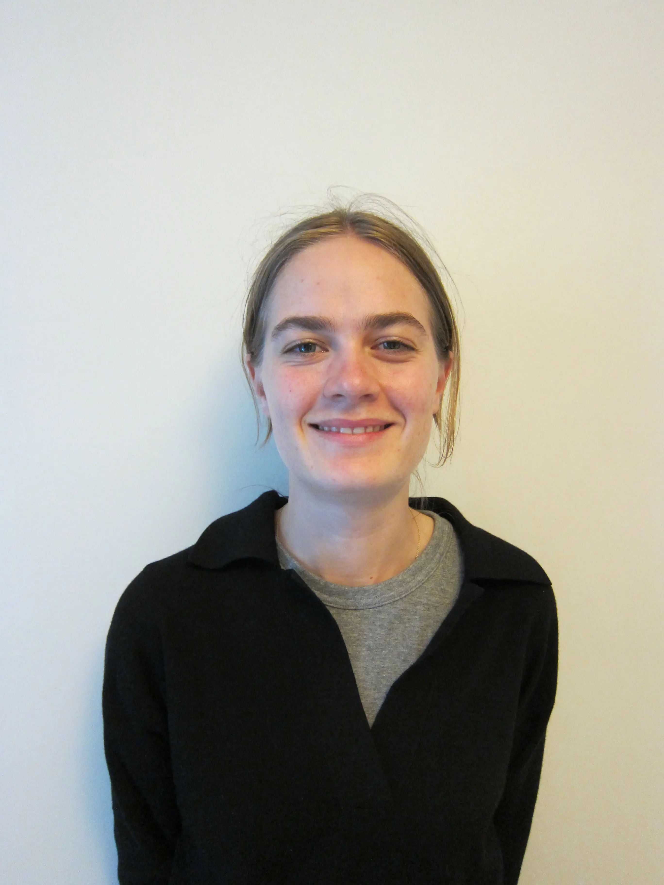
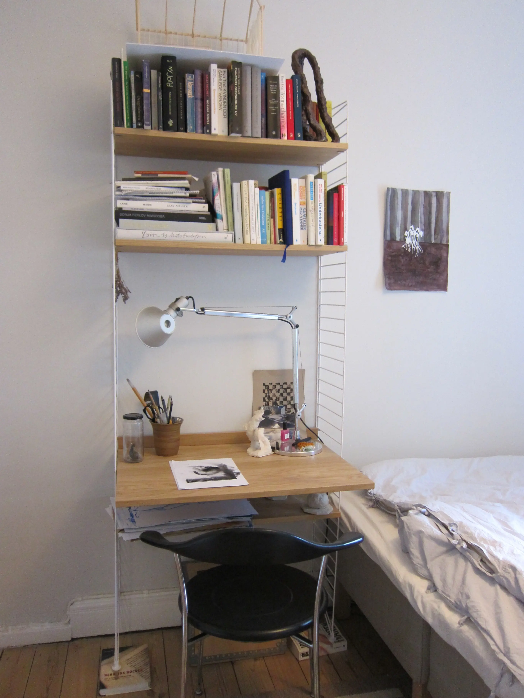
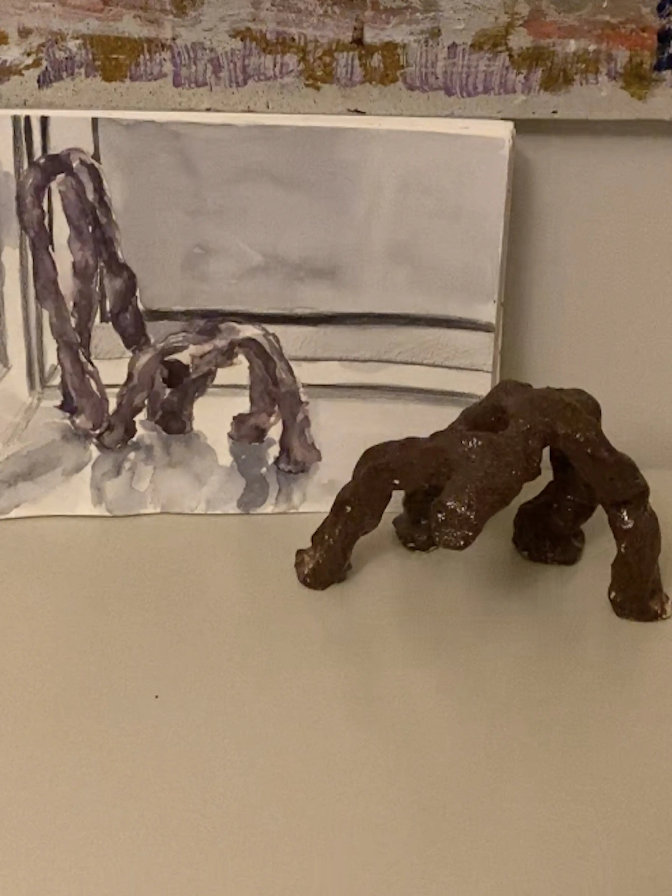
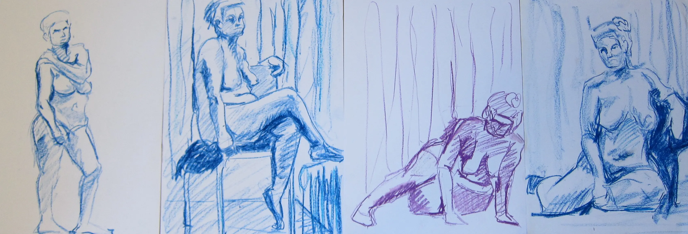

At tegne er at se
En passion kan skabe rum for fortolkning og formidling. Jeg har talt med Mimi, som har en passion for at tegne. For hende er det at tegne et frirum og et virkemiddel til at komme ud af hovedet og bare være i nuet. For andre kan dét at skrive dagbog være en måde at se ting tydeligere. For Mimi er det at tegne at se.



